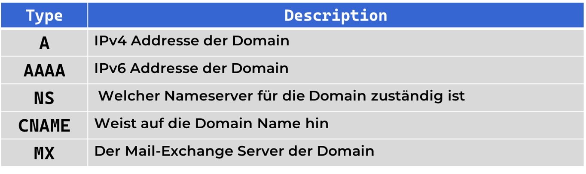

CopyTech
Domain Name System (DNS)
Zum ausdrucken (STRG + P)
Was ist ein DNS-Server?
Der DNS ("Domain Name System") ist ein System, das die Domain Name in ihre zugehörigen IP-Adresse umwandelt.
Wie funktioniert der DNS?
Das DNS kann man wie ein Internet-Telefonbuch vorstellen. Beim Besuch einer Website übersetzt es den Hostname (z.B www.example.com) in eine für Computer verständliche IP-Adresse (z. B. 192.168.1.1) umgewandelt, damit Geräte die Website finden können. Der DNS Server erhält die Anfrage und sucht. Falls es nicht gefunden hat wird es bei anderen DNS Server weitergeleitet. Falls der Eintrag nirgendswo gefunden wurde heißst es die Seite wurde nicht gefunden oder existiert nicht.
Wie funktioniert DNS genauer
Das obere gezeigte inhalt ist die kurz version für DNS aber Der DNS Vorgang ist noch länger als das man nur einen DNS server checkt. Als erstes wird der Lokaler DNS Server gecheckt ob es die Seite Kennt
Falls Nicht dann frägt der Lokaler DNS Server Den Internet Anbieter auch english genannt Internet Service Provider (kurz: ISP)
Wenn der ISP die Seite auch nicht kennt dann frägt es den DNS Root-Server es gibt 13 Stück davorn und wird von amerikanische Regierungen, Universitäten, etc.. verwaltet
Der Root server antwortet mit der IP Addresse vom Nameserver das für die ".com" TLD (Top Level Domain) Zuständig ist und dann wird dort gefragt ob es die seite kennt.
Der TLD server antwortet mit der IP Addresse vom Nameserver wo die seite gespeichert ist in dem beispiel Cloudflare. dann wird dort letztes mal gefragt ob es die seite kennt
Der Nameserver antwortet mit der IP von der seite. falls es nicht die seite findet dann kommt "404 NOT FOUND" also die seite wurde nicht gefunden.
DNS Eigenschaften
Jeder DNS Eintrag haben eigenschaften. Es gibt viele eigendschaften da viele nicht so wichtig sind sind hier die 5 Wichtigsten DNS Eigenschaften.

Nachteile
Trotz seiner Effizienz kann das DNS Sicherheitsprobleme verursachen, wie z.B. DNS-Spoofing, bei dem falsche IP-Adressen bereitgestellt werden. Da DNS bis heute noch keine Sicherheitschecks hat.